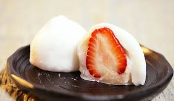
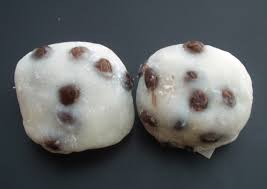
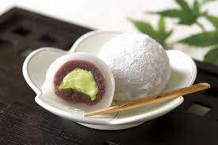

What is "Daifuku"?
Daifukumochi (大福餅), or Daifuku (大福) (literally "great luck"), is a Japanese confection consisting of a small round mochi (glutinous rice cake) stuffed with sweet filling, most commonly anko, sweetened red bean paste made from azuki beans.Daifuku comes in many varieties.
The most common is white-, pale green-, or pale pink-colored mochi filled with anko. These come in two sizes, one approximately 3cm (1.2in) diameter, the other palm-sized.Nearly all daifuku are covered in a fine layer of corn or potato starch to keep them from sticking to each other, or to the fingers.
How to make "Daifuku"
- Mix Mochiko and water in a glass (or other heat proof) bowl and mix well. Add some more water if it's too dry, 1 Tbsp at a time.
- Steam the Mochiko dough (leaving the dough in the bowl) in a steamer for 20 minutes.
- Transfer the steamed Mochi into a pot and cook at medium to medium low heat with 1/3 of the sugar (2/3 cup). When the sugar is completely dissolved, add another 1/3 of the sugar and mix well. Add the last part of the sugar and cook some more until the sugar is dissolved. Take the time to melt the sugar, but be careful not to burn it.
- Take the hot Mochi out from the pot onto a sheet pan liberally dusted with cornstarch. Shape as you like.


